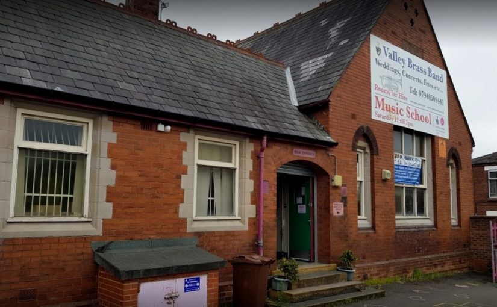

.png)
Our History
Valley Brass Band is based in Haydock in the glassmaking and former mining town of St. Helens in the North West of England.
Founded in 1992, by its conductor David Chadwick, the group came in to existence due to the demise of the free music service in the local area. David felt there was a need to address the lack of instrumental tuition for children in the area. Musical presentations were given in schools to assess the interest of children and local people, and much curiosity was aroused. Instruments were begged and borrowed, and a small learner group began, which eventually became Valley Brass Band.
Our original rehearsal room was the church hall of St. James Church in Haydock. Here we received much support from the then priest, Father Paul. This helped the band to grow until new facilities had to be sought because of the restriction of space at St. James.
The band then moved to Grange Valley Community Centre in Haydock in 1994. Centre managers Greg Smith and Craig Westwell were very keen to support the band and have continued to do so ever since. The centre has much space and excellent facilities and remained the band H.Q until 2009. St. James still played an important part as a midweek rehearsal facility.
As the band improved, the senior ensemble moved to two rehearsals a week – Saturday at Grange Valley and Tuesday at St. James. However, there was still the problem of finding venues for extra rehearsals in the build up to contests, which proved to be very difficult and was compounded by the transport and storage of equipment.
This was resolved by a local businessman, who gave the band a permanent rehearsal room and store in 1999 at the Old Cottage Hospital in Haydock. This proved invaluable as it gave flexibility to practice times and allowed storage of instruments, music and equipment.
In 2007 Valley Brass moved to The Richard Evans annexe of Legh Vale Primary School. Grange Valley Community Centre was still used as a base for the Saturday music centre, and our efforts to promote music and engage young people continued to have much success. In 2009, the band moved all rehearsals and storage to the Richard Evans School site. By this time, the school was closed and Valley Brass was given the responsibility of using the site for its activities while helping to deter vandalism and theft.
Valley Brass are delighted to still occupy what we now refer to as the Richard Evans Centre (our ‘band-rooms’ for short). Having a permanent home has enabled the band to grow; not only in size but also in our musical capabilities, and has facilitated the work we do within our community to ensure anyone can play an instrument, through our learner groups and training band.
Rehearsing twice a week with a busy calendar year-round allows us to raise sufficient funds to keep our rehearsal facilities maintained and provide a consistent home for Valley Brass and its players. Our centre is still under constant restoration and development, and we are delighted to welcome our local community to use our facilities, who do so regularly throughout the week.